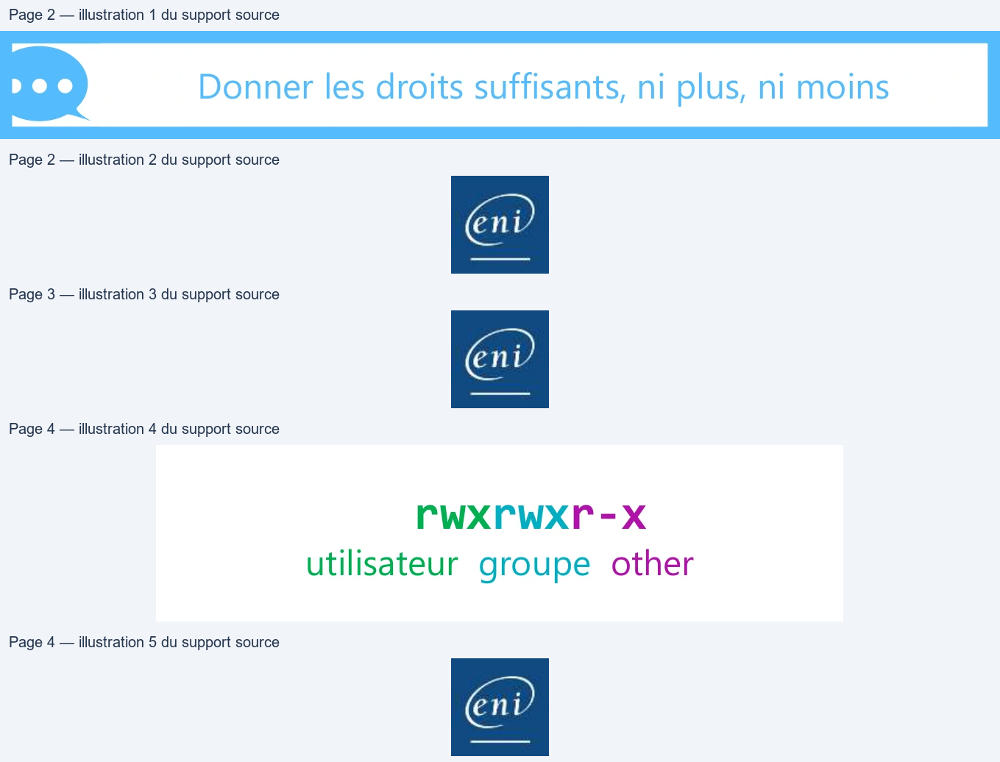
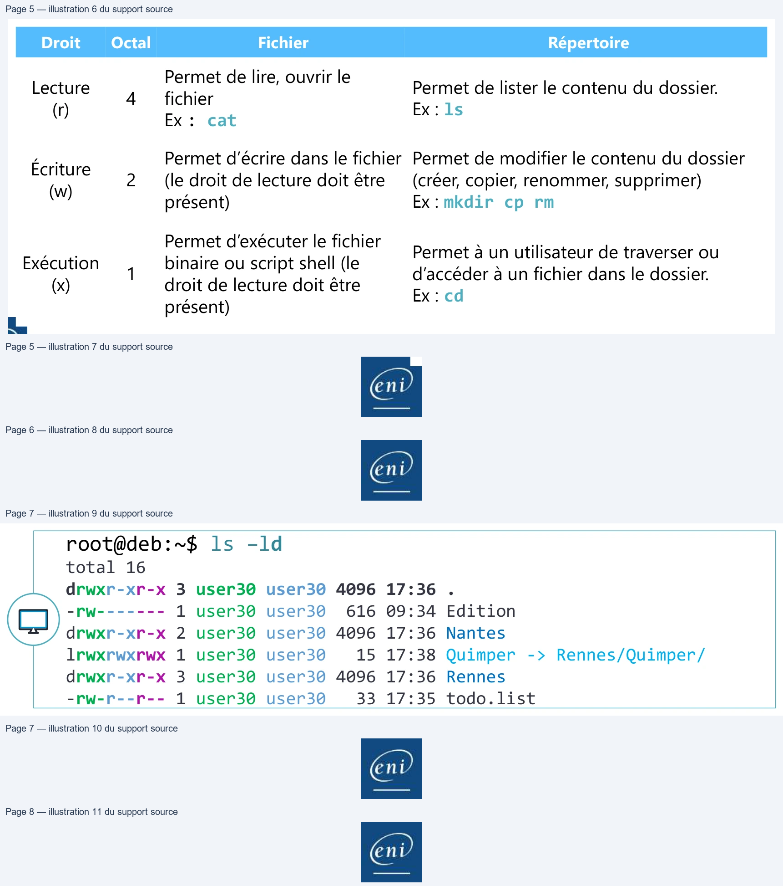
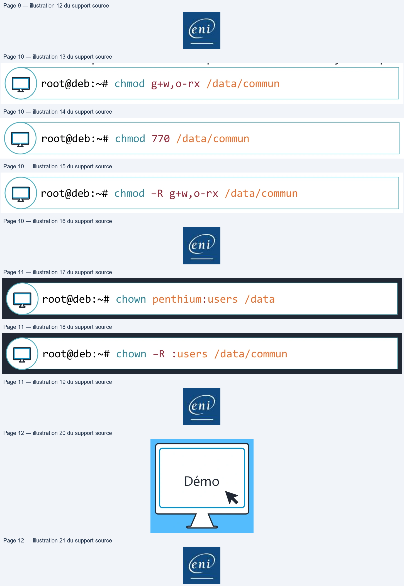
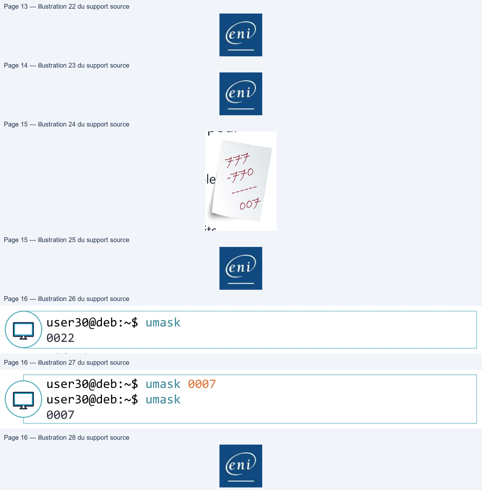
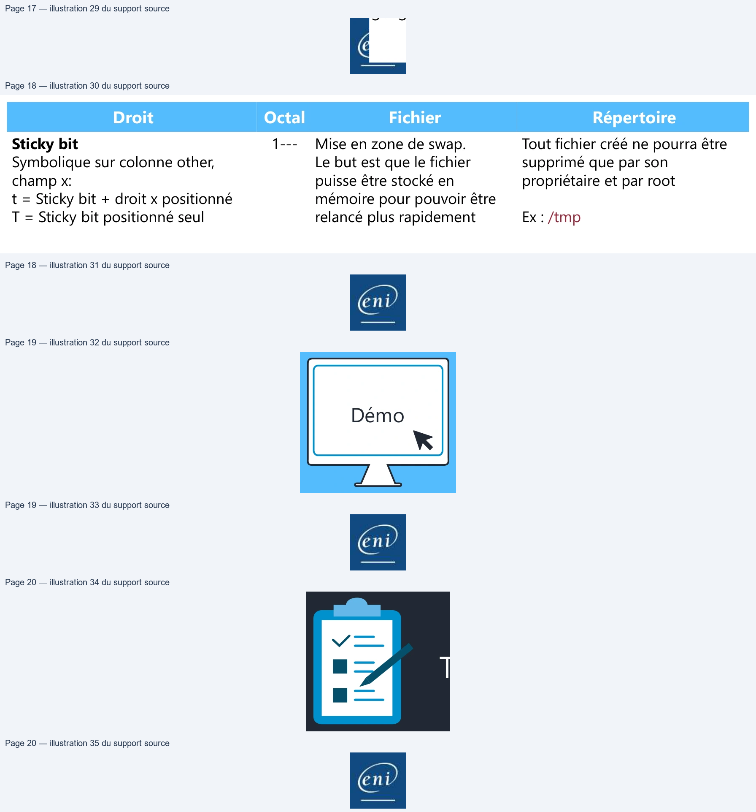
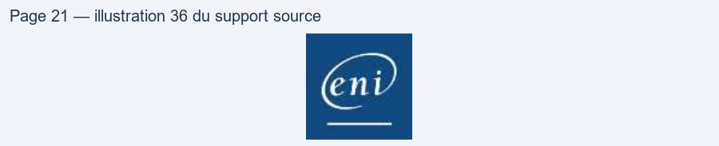

Transcription du document du Drive TSSR. La mise en forme est adaptée au Web ; les compléments IA du portail sont présentés séparément.
End
• Les droits d’accès sur les fichiers sont directement inscrits dans
l’inode des fichiers (répertoires). Ils sont découpés en trois
colonnes : utilisateur propriétaire (user), groupe propriétaire
(group) et les autres (other).
• En pratique, il y a toujours trois groupes de trois droits.
rwxrwxr-x utilisateur groupe other

Permet de lister le contenu du dossier. Ex : ls
(r) 4 Permet de lire, ouvrir le fichier Ex : cat
Permet de modifier le contenu du dossier (créer, copier, renommer, supprimer) Ex : mkdir cp rm
Permet à un utilisateur de traverser ou d’accéder à un fichier dans le dossier. Ex : cd
Les droits Unix/Linux
Les types de droits
Droit Octal Fichier Répertoire
Permet de lire, ouvrir le Lecture Permet de lister le contenu du dossier. 4 fichier (r) Ex : ls Ex : cat
Permet d’écrire dans le fichier Permet de modifier le contenu du dossier Écriture 2 (le droit de lecture doit être (créer, copier, renommer, supprimer) (w) présent) Ex : mkdir cp rm
Permet d’exécuter le fichier Permet à un utilisateur de traverser ouExécution binaire ou script shell (le 1 d’accéder à un fichier dans le dossier. (x) droit de lecture doit être Ex : cd présent)Exemples rwxrwxr-x = 775 rwxr-x--- = 750 rw-rw-r-- = 664
Les droits Unix/Linux
Les types de droits
Pour calculer les droits en octal, il faut additionner les valeurs des
droits présents pour les trois groupes
rwx = 4+2+1 = 7
Exemplesrw- = 4+2 = 6
rwxrwxr-x = 775
r-x = 4+1 = 5 rwxr-x--- = 750
r-- = 4 rw-rw-r-- = 664| rwx | = | 4 2 1 + + = | 7 | |||
| rw - | = | 4 2 + = | 6 | E l xemp es rwxrwxr x - | = | 775 |
| r x - | = | 4 1 + = | 5 | rwxr x - --- | = | 750 |
| r -- | = | 4 | rw rw r - - -- | = | 664 |
• Pour afficher les droits d’un fichier ou répertoire, la commande ls sera utilisée :
root@deb:~$ ls –ld total 16 drwxr-xr-x 3 user30 user30 4096 17:36 . -rw------- 1 user30 user30 616 09:34 Edition drwxr-xr-x 2 user30 user30 4096 17:36 Nantes lrwxrwxrwx 1 user30 user30 15 17:38 Quimper -> Rennes/Quimper/ drwxr-xr-x 3 user30 user30 4096 17:36 Rennes -rw-r--r-- 1 user30 user30 33 17:35 todo.list

• chmod <-R> [ugoa][+ - =][rwxX] fichier ou dossier
• La commande chmod permet de modifier les droits.
• Il est possible d’utiliser cette commande de deux façons :
• Absolue : en octal ou symbolique avec le signe « = »
• Relative : en symbolique avec les signes « + » ou « - »
• Attention à l’option –R, le fait de réaliser un chmod de façon
récursive doit être effectué de façon réfléchie et ne doit pas être
généralisé à tous les usages.
root@deb:~# chmod g+w,o-rx /data/commun
root@deb:~# chmod 770 /data/commun
root@deb:~# chmod –R g+w,o-rx /data/commun
• chown <-R> [user]:[group] fichier(dossier)
root@deb:~# chown penthium:users /data
root@deb:~# chown –R :users /data/commun
N

• L’umask est utilisé pour déterminer les droits des fichiers et
répertoires.
• La valeur de l’umask sera « soustraite » à la valeur des droits
maximaux à la création : 0666 pour un fichier, 0777 pour un
répertoire.
• Sur Debian, l’umask par défaut des utilisateurs est de 0022.
Il est important que l’umask de root et des utilisateurs de service
(UID < 1000) reste à 0022.
• Il est possible pour chaque utilisateur de changer son umask avec
la commande umask.
• En pratique, on calcule toujours l’umask à partir des droits pour les
répertoires (sinon le droit d’exécution ne sera pas posé pour les
dossiers créés avec ce masque.)
• Si je souhaite obtenir des droits de lecture-écriture-exécution pour
l’utilisateur et le groupe propriétaire :
FFF
D
|
00F
• umask [mode]
user30@deb:~$ umask 0022
user30@deb:~$ umask 0007 user30@deb:~$ umask 0007
• Pour avoir un umask spécifique lors de sa connexion, il sera possible d’ajouter
une entrée avec la commande umask dans son fichier de chargement de son
shell (le fichier ~/.bashrc pour le shell bash)

chmod <-R> [ugoa][+ - =][st] fichier ou dossier
Droits sur les fichiers et répertoires
TPDémo
Gestion des permissions|

• Vous comprenez le fonctionnement des droits Unix Linux
• Vous savez modifier les droits et propriétaires de dossiers
et fichiers
• Vous savez manipuler les modèles de droits
• Vous savez positionner des droits spéciaux
